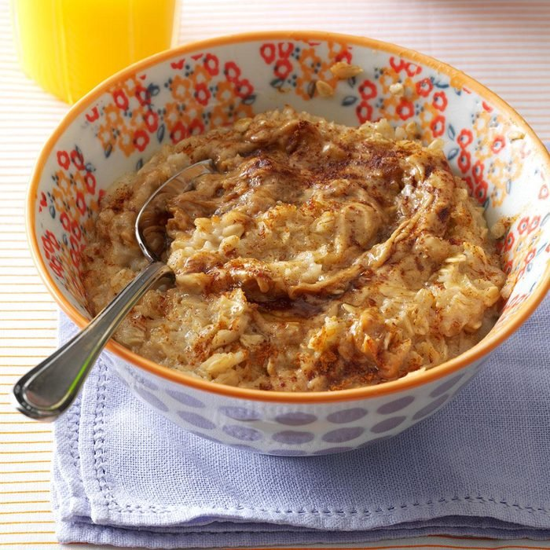

Pre-Run Power Oats

Plate of Chicken Tacos, paired with lime, chips, & pico de gallo
Ingridients
- 1-3/4 cups water
- 1/8 teaspoon salt
- 1 cup old-fashioned oats
- 2 tablespoons creamy peanut butter
- 2 tablespoons honey
- 2 teaspoons ground flaxseed
- 1/2 to 1 teaspoon ground cinnamon
- Chopped apple, optional
Steps
- In a small saucepan, bring water and salt to a boil. Stir in oats; cook 5 minutes over medium heat,
stirring occasionally. Transfer oatmeal to 2 bowls; in each bowl, stir half each peanut butter, honey,
flaxseed, cinnamon and, if desired, apple. Serve immediately.
Home